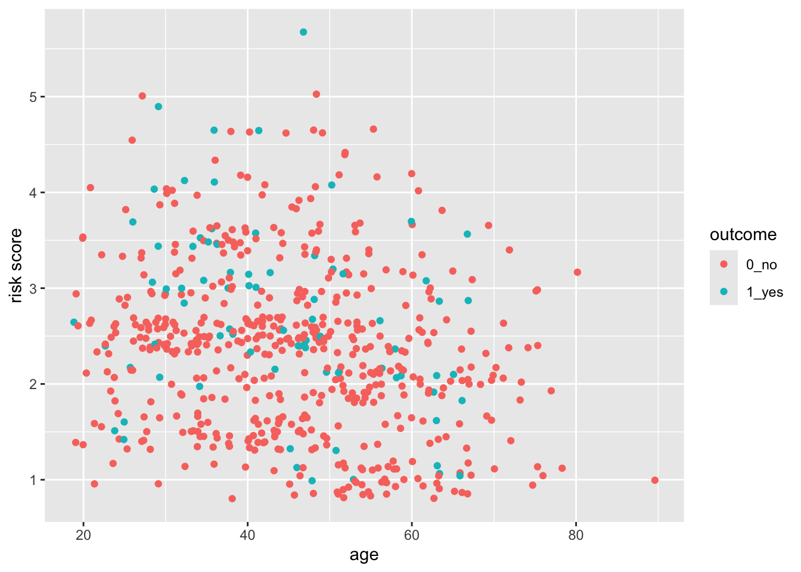
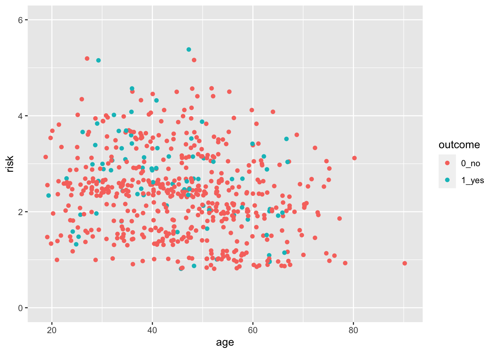
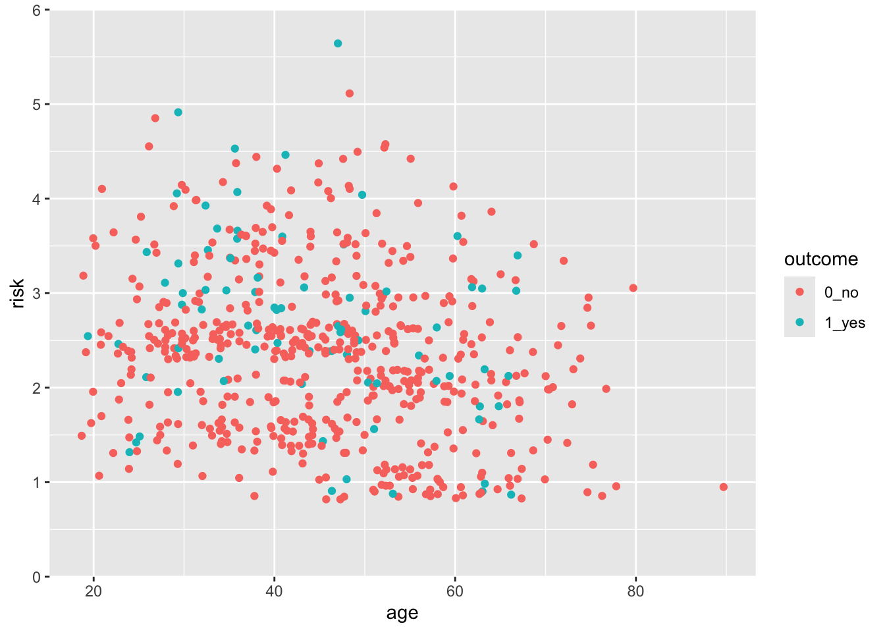
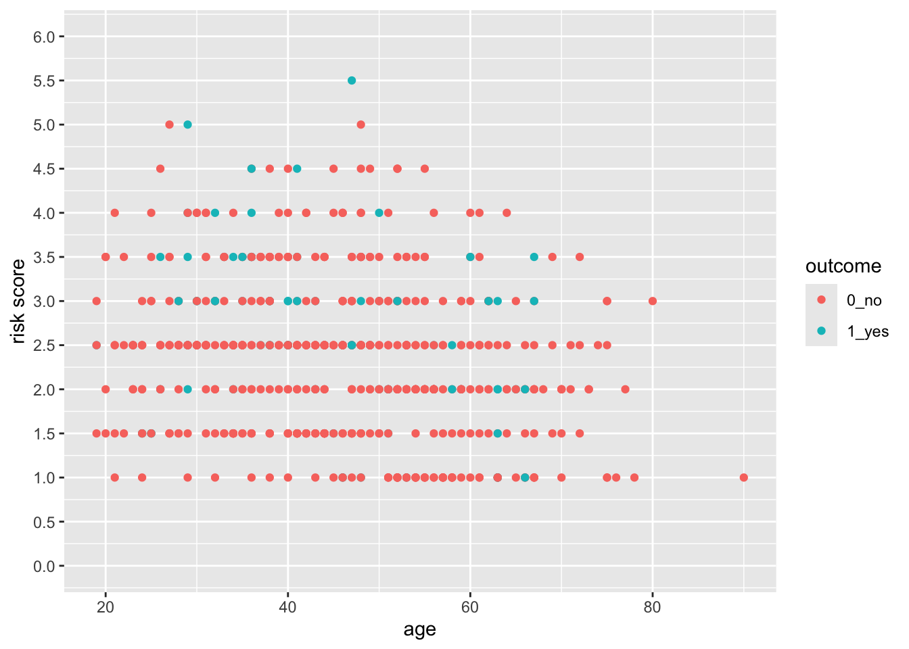
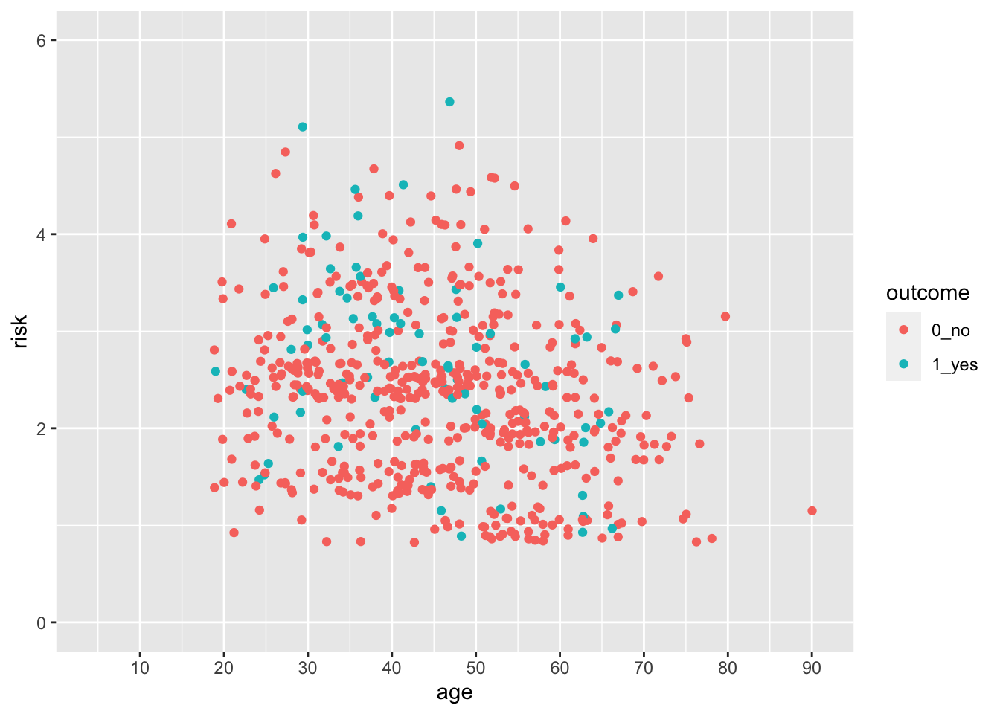
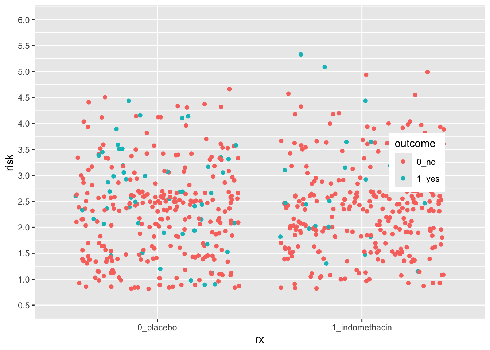
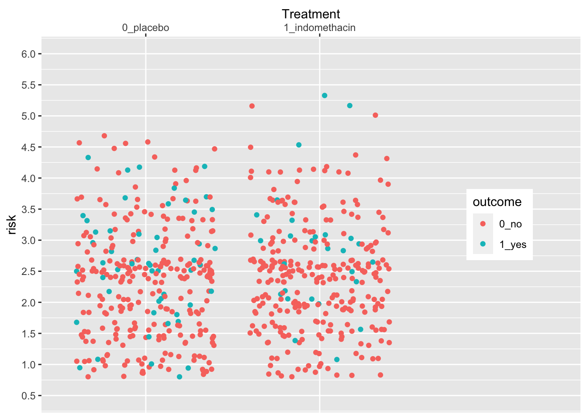
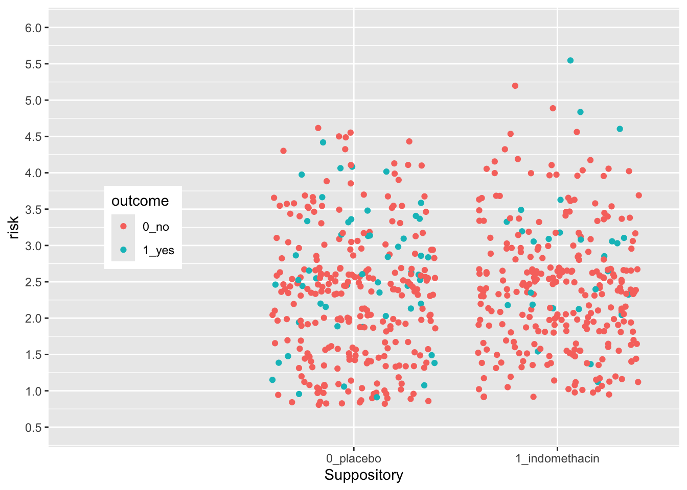
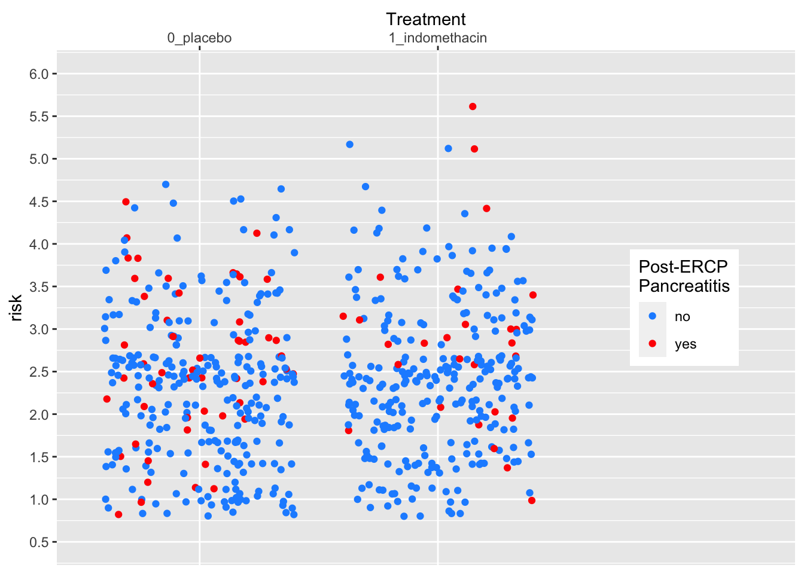
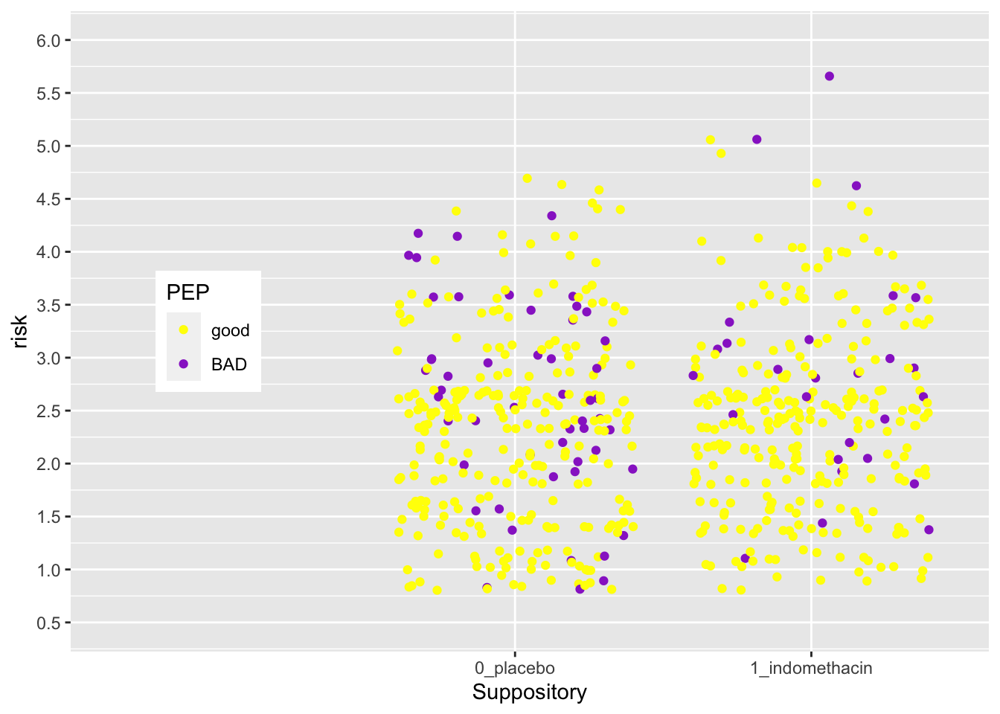

Chapter 28 Customizing Plot Scales
28.1 Goals for this Chapter
- learn how to use scales to control x and y axes
- learn how to use scales to control shape, color, and alpha
- learn how to use scales to control the legend
- learn how to use scales for dates, percents, log, ordinals, dollars, and scientific notation
28.3 A Flipbook of Where We Are Going With Scales
See the flipbook below, which contains some examples of what you can do with customized scales. These control both the axes and the legend(s). You can click on the flipbook arrows and move forward or backward in the slides with the left and right arrows to see what each line of code actually does. Go forward and backward until you understand the function of each line.
You can use the the icons in the bottom bar to expand to full screen or share this flipbook. If you are in full screen mode, you can use the Home button to go the the first slide and the End button to go to the last slide, and the Escape key to get out of full screen mode.
28.4 A Basic Scatterplot
Let’s start with a scatterplot of age vs risk of PEP in the indo_rct dataset
indo_rct <- medicaldata::indo_rct
indo_rct %>%
ggplot() +
aes(x = age, y = risk, color = outcome) +
geom_jitter()
The axes cover the whole range by default, whith a bit of space added at the edges. This occurs because the default for scale_(x|y)continuous* for continuous variables adds 5% at either end so that points are not right at the edge. Similarly, the scale_discrete function for discrete variables adds 0.6 of a category to the width to either side.
28.5 But what if you want the scale for risk to start at 0?
You can do this, by taking control of the scales. In this case, the scale_y_continuous() function.
indo_rct %>%
ggplot() +
aes(x = age, y = risk, color = outcome) +
geom_jitter() +
scale_y_continuous(limits = c(0,6))
Now try this yourself. Copy the code above (click on the copy icon in the top right of the code chunk), paste it into your RStudio IDE, and edit to:
- change the x axis so that it starts at age 15, and ends at 90. Click on the
Solutionbutton to toggle showing or hiding the solution.
28.6 But this axis does not really start at Exactly 0
You can see that the x- and y-axes extend a bit past 0. This is because there is a default expansion of the scales (5% for continuous variables). You can control this default with the expand() function. Let’s see how this works to make the y-axis start at exactly zero. You can set the expansion term as a multiplier (mult) or an additive (add).
indo_rct %>%
ggplot() +
aes(x = age, y = risk, color = outcome) +
geom_jitter() +
scale_y_continuous(limits = c(0,6), expand = expansion(mult =0)) 
Now try this yourself. Copy the code above (click on the copy icon in the top right of the code chunk), paste it into your RStudio IDE, and edit to:
- Change the x axis so that it starts at age 0, and ends at 85.
- Make the x-axis expansion multiplier zero (not the default of 0.05).
Click on the Solution button to toggle showing or hiding the solution.
28.7 Control the Limits and the Breaks
You can see that ggplot picks sensible breaks, but the defaults might not always work for you. Let’s change the risk scale to breaks of 0.5, using the breaks argument. Note that using the limits argument also lets you establish the limits of the y-axis.
indo_rct %>%
ggplot() +
aes(x = age, y = risk, color = outcome) +
geom_point() +
scale_y_continuous(limits = c(0,6),
breaks = seq(0, 6, by = 0.5)) 
Now try this yourself. Copy the code above (click on the copy icon in the top right of the code chunk), paste it into your RStudio IDE, and edit to:
- Change the x axis so that it starts at age 0, and ends at 95, with breaks at every decade from 10-90 (but not zero).
Click on the Solution button to toggle showing or hiding the solution.
indo_rct %>%
ggplot() +
aes(x = age, y = risk, color = outcome) +
geom_jitter() +
scale_y_continuous(limits = c(0,6)) +
scale_x_continuous(limits = c(0,95),
expand = expansion(mult = 0),
breaks = seq(10, 90, by = 10)) Notice that the y axis has the default 5% multiplier, but the x axis does not, so it has limits exactly at 0 and 95.
28.8 Test what you have learned
(correct answers will be green!)
You can set the start and end points of an axis with the
limitsargumentYou can set the ticks on an axis with the argument in a scales function.
To expand the margin of a plot on one side by a specific amount, you use the argument in the expand argument within a scales function.
28.9 Continuous vs. Discrete Plots and Scales
You can see below that ggplot picks sensible spacing and breaks for a discrete scale, but the defaults might not always work for you.
indo_rct %>%
ggplot() +
aes(x = rx, y = risk, color = outcome) +
geom_jitter() +
theme(legend.position = c(0.85, 0.5)) +
scale_y_continuous(limits = c(0.5,6),
breaks = seq(0.5, 6, by = 0.5)) ## Warning: A numeric `legend.position` argument in `theme()` was deprecated in ggplot2
## 3.5.0.
## ℹ Please use the `legend.position.inside` argument of `theme()` instead.
## This warning is displayed once every 8 hours.
## Call `lifecycle::last_lifecycle_warnings()` to see where this warning was
## generated.
Let’s expand the x axis to the righ to make room for a legend in the plot on the right, using the expand argument. We can change the axis name and position as well.
indo_rct %>%
ggplot() +
aes(x = rx, y = risk, color = outcome) +
geom_jitter() +
theme(legend.position = c(0.85, 0.5)) +
scale_y_continuous(limits = c(0.5,6),
breaks = seq(0.5, 6, by = 0.5)) +
scale_x_discrete(expand = expansion(add =c(0.6,1.5)),
name = "Treatment",
position = "top") 
Now try this yourself. Copy the code above (click on the copy icon in the top right of the code chunk), paste it into your RStudio IDE, and edit to:
- Change the x axis so that you
- add 1.5 to the left side (add 1.5, 0.6),
- move the legend to the left (0.15, 0.5)
- change the title to “Suppository”
- move the title position to the bottom
Click on the Solution button to toggle showing or hiding the solution.
indo_rct %>%
ggplot() +
aes(x = rx, y = risk, color = outcome) +
geom_jitter() +
theme(legend.position = c(0.15, 0.5)) +
scale_y_continuous(limits = c(0.5,6),
breaks = seq(0.5, 6, by = 0.5)) +
scale_x_discrete(expand = expansion(add =c(1.5, 0.6)),
name = "Suppository",
position = "bottom")  The legend position is based on the proportion of the x axis (0-1) and the y axis (0-1), so that legend.position (0,0) is the bottom left, and legend.position (1,1) is the top right.
28.10 Using Scales to Customize a Legend
Legends are also scales, for discrete or continuous scales. You can use scales_(color|size|shape|alpha)_nnn functions to customize them. Let’s see an example below.
medicaldata::indo_rct %>%
ggplot() +
aes(x = rx, y = risk, color = outcome) +
geom_jitter() +
theme(legend.position = c(0.85, 0.5)) +
scale_y_continuous(limits = c(0.5,6),
breaks = seq(0.5, 6, by = 0.5)) +
scale_x_discrete(expand = expansion(add =c(0.6,1.5)),
name = "Treatment",
position = "top") +
scale_color_manual(name = "Post-ERCP\nPancreatitis",
labels = c("no", "yes"),
values = c("dodgerblue", "red")) 
Now try this yourself. Copy the code above (click on the copy icon in the top right of the code chunk), paste it into your RStudio IDE, and edit to:
- Change the legend
- make the title “PEP”
- change the labels to “good” and “BAD”
- change the colors to “yellow” and “darkorchid”
Click on the Solution button to toggle showing or hiding the solution.
medicaldata::indo_rct %>%
ggplot() +
aes(x = rx, y = risk, color = outcome) +
geom_jitter() +
theme(legend.position = c(0.15, 0.5)) +
scale_y_continuous(limits = c(0.5,6),
breaks = seq(0.5, 6, by = 0.5)) +
scale_x_discrete(expand = expansion(add =c(1.5, 0.6)),
name = "Suppository",
position = "bottom") +
scale_color_manual(name = "PEP",
labels = c("good", "BAD"),
values = c("yellow", "darkorchid"))  The legend position is based on the proportion of the x axis (0-1) and the y axis (0-1), so that legend.position (0,0) is the bottom left, and legend.position (1,1) is the top right.
28.11 Test what you have learned
(multiple-choice, fill-in-the-blank, and TRUE/FALSE - correct answers will be green!)
You can take complete control of colors with
scale_color_You can set the title of a color legend within the
scale_color_discrete()function with the argument.You can set the names of each level of a discrete color legend within the
scale_color_discrete()function with the argument.You can set each color of a discrete color legend within the
scale_color_discrete()function with thevaluesargument.